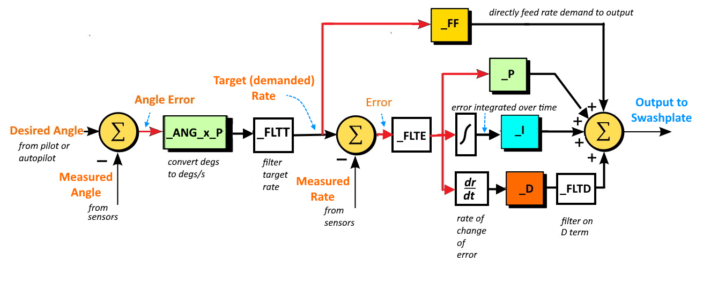

General ArduCopter Attitude Controller Description¶
Users should generally understand the flight control laws before tuning. At a high level, the ArduCopter control laws are designed as a model following architecture where the software converts the pilot or autopilot’s input into a demanded attitude (Stabilized Modes) or a pilot demanded axial rate (Acro mode) and controls the aircraft to achieve that demanded value.
It has two controllers (attitude and rate) that work together to ensure the actual aircraft is following the demanded pitch and roll rates and attitudes.
The pilot’s commands are limited by the amount of acceleration that can be commanded through the ATC_ACCEL_P_MAX for pitch and ATC_ACCEL_R_MAX for roll.
The initial responsiveness (crispness/sluggishness) of the aircraft to the pilot input can be adjusted through the ATC_INPUT_TC parameter. The pilot input and these parameters are used to determine the rate required to achieve the demanded response that is fed to the rate controller.
The attitude controller is used to ensure the actual attitude of the aircraft matches the demanded attitude of the autopilot. It uses the ATC_ANG_PIT_P in pitch and the ATC_ANG_RLL_P in roll to determine a rate proportional to the difference between demanded and current attitude that is fed to the rate controller to drive the aircraft to the demanded attitude.
The rate controller receives the demanded rate resulting from the pilot input and/or the rate from the attitude controller and determines the swashplate commands required to achieve that rate. The rate controller uses a PID control algorithm with a feed forward path to control the aircraft and achieve the demanded rate.
The feed forward path uses the input rate and applies the ATC_RAT_PIT_FF gain for pitch and ATC_RAT_RLL_FF gain for roll to determine its portion of the swashplate command. The PID algorithm uses the error between the measured rate and input demanded rate to determine its portion of the swashplate command. These are summed and sent to the mixing unit where the servo positions are determined.
So this tuning method uses the FF gain initially to ensure the requested rates
match the actual rates. However the rates can vary from the requested due to
disturbances and inaccuracies. The P, I, and D gains (ATC_RAT_x_P/I/D) are then used to correct any disturbances that cause the actual rates to deviate from the requested rates.
Error between demanded and measured rates is multiplied by the P term. The D term determines the rate of error change and adds a correction based on that, providing faster response to quickly occurring errors and providing dampening to control overshoots, like shock absorbers on a car.
Since there may be systemic offsets (like CG errors or mechanical trim imperfections) resulting in some long term errors to achieving the demanded rates, an integrator accumulates all errors over time, and provides an additional correction via the I gain. I gain is multiplied by the integrator and summed with the other outputs of the rate controller to form the input to the swashplate.
{kind=link}
The integrator maximum I path contribution is limited by the ATC_RAT_RLL_IMAX in roll and ATC_RAT_PIT_IMAX in pitch.